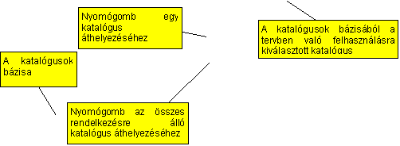
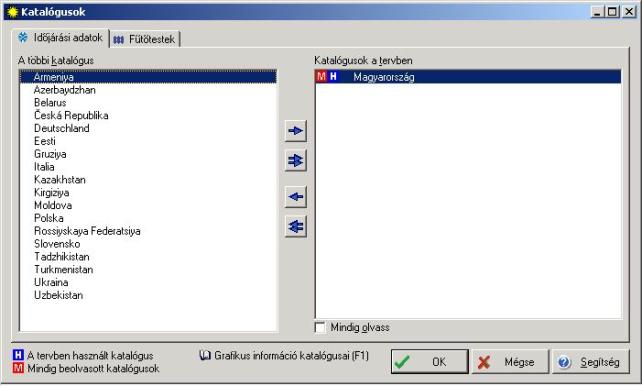
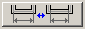
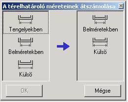
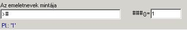
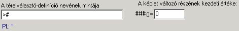
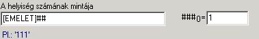
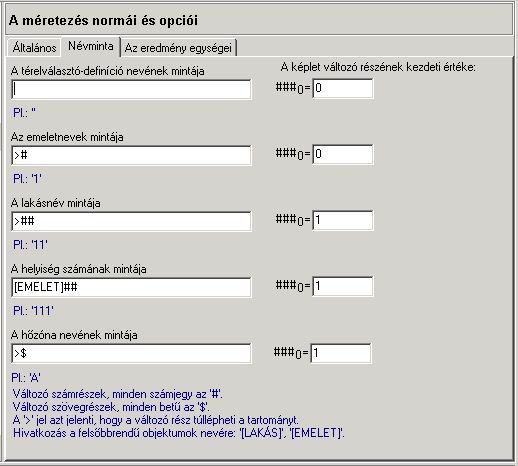

A szerkesztõ ablak három könyvjelzõt tartalmaz: „Általános”, „Névminta”, „Az eredmények egységei”.
„Általános” könyvjelzõ
Itt a „Szabványcsomag”, „A térelhatárolók hõtechnikai számításainak szabványa”, „A hõveszteség szabványa”, „SZE szabvány” (a szezonális energiaidény számításának szabványa) mezõkben az aktuális szabványcsomag jelenik meg, amelyen az program számításai alapulnak. A felhasználó itt megváltoztathatja a szabványcsomagot. Választhat az adott országban használt és az európai normacsomagot között.
Normál esetben a program elvégzi a hõveszteség számítást. További számítási funkcióként a következõ mezõket lehet kijelölni:
- „A szezonális energiaigény számításának elvégzése",
- „A páralecsapódás számítása határolószerkezetek belsejében”,
- "Az infiltráció meghatározása a helyiségekben”,
- "A nem hûtõ térelhatárolók elrejtése”
„A nem hûtõ térelhatárolók elrejtése” számítási opció lehetõvé teszi a nem hûtõ grafikus térelhatárolóknak, azaz azoknak a belsõ térelhatárolóknak a mellõzését épületstruktúrában, amelyeknek mindkét oldalán azonos a hõmérséklet a helyiségben. Ennek az opciónak a kiválasztása lehetõvé teszi, hogy az épületstruktúrát az Instal-therm programból ezeknek a térelhatárolóknak a mellõzésével olvassuk be, ami nem módosítja az eredményt, viszont a táblázatokat áttekinthetõbbé teszi.
A „Katalógusok kezelése” nyomógomb lehetõvé teszi az éghajlati adatok katalógusának és a radiátorkatalógusoknak a kiválasztását. A „Katalógusok kezelése” nyomógombra kattintás után a felhasználó ki tudja választani az „Éghajlati adatok” könyvjelzõrõl az éghajlati adatokat, valamint a „Radiátorok” könyvjelzõrõl a radiátorokat.


A „További katalógusok” baloldali ablakában a találhatók azoknak az éghajlati adatoknak a katalógusai, amelyek a programban hozzáférhetõk. A „Katalógusok a tervben” jobboldali ablakában találhatók a tervben használt katalógusok, amelyekbõl a számításokhoz az éghajlati adatokat fogjuk kiválasztani.
A tervvel való munka elején a jobboldali ablak üres. A felhasználónak ki kell választania a katalógusbázisból azt, amelyet a tervben használni fog. A baloldali ablakban a kiválasztottra kattintva, és az áthelyezés nyomógombot használva a felhasználó azt áthelyezi a szomszéd ablakba. Ilyen módon a katalógus fel lesz használva a tervben. Ha a felhasználó mindig használni akarja a kiválasztott katalógust, ki kell jelölnie a „Mindig olvassa be” mezõt. Az így kiválasztott katalógusnál megjelenik az ikonka ”Mindig beolvasott katalógus” ikon. Ilyen módon minden, a programban újonnan megnyitott terv automatikusan beolvassa a kiválasztott éghajlati adatok katalógusát. A program bezárása szintén nem törli a katalógusválasztást. Ezt az eljárást tetszõleges számú katalógusra le lehet folytatni.
A felhasználó a „Katalógusok a tervben” ablakba átviheti a katalógusbázisban levõ összes katalógust „Az összes áthelyezése” nyomógombbal.
A katalógusoknak a tervbõl való eltávolítását a felhasználó az ellenkezõ irányú nyilakkal ellátott analóg nyomógombokkal végezheti el.
Mindkét listában a katalógus neve elõtt megjelenhet a jel. Ez azt jelenti, hogy a katalógus el van látva grafikus információs rendszerrel. Ezt az információt minden alkalommal meg lehet hívni az F1 billentyûvel, a katalógus vagy ebbõl katalógusból egy elem kiválasztásánál.
A tervben használt katalógusok listájában ezen kívül megjelennek a „Z” és az „U” jelek is. Ezek a jelek a következõt jelentik:
- „Z” – a katalógus minden alkalommal be lesz olvasva a lemezrõl (minden tervbe be van olvasva). Ezt a „Mindig beolvas” mezõ megjelölésével lehet a kijelölt katalógusnál (katalógusoknál) elérni. Az ilyen katalógusnál megjelenik a jel.
- Az „U” azt jelenti, hogy a katalógus az aktuális tervben van használva. Az ilyen katalógusnál megjelenik az jel.
A 
! Fontos, hogy a másoláshoz azokat a méreteket válasszuk ki, amelyeket a felhasználó ténylegesen használ a tervben. Ha a térelhatárolók méretei a belvilágban vannak megadva, akkor a felhasználónak az átszámoláshoz is „a belvilágbant” kell kiválasztania. Ellenkezõ esetben az utasítás nem lesz végrehajtva.
A „Térelhatárolóméretek átszámolása” nyomógombot felhasználva a felhasználó a következõ, rendelkezésre álló másolási mûveletet hajthatja végre:
- A tengelybeni méretekbõl belsõ méretekre,
- A belvilágbeli méretekbõl belsõ méretekre,
- A tengelybeni méretekbõl belvilágbeli méretekre,
- A belsõ méretekbõl a belvilágbeli méretekre.
! A térelhatárolók méreteinek lehetséges átszámítási opciói a program szabványverziójától függenek.

A „Névminta” könyvjelzõ
Ez az opció a nevek mintájának a meghatározására szolgál az újonnan létrehozott objektumokra, így a térelhatároló-definíciókra, épületszintekre, lakásokra, helyiségekre, térelhatárolókra. A programban némelyik objektumhoz van egy alapértelmezetten hozzárendelt névminta. A felhasználó ezeket is tudja szerkeszteni. Az üres mezõkben a felhasználó önállóan írhat be névmintát.
A névminta létrehozásának alapelvei:
1. „#” jel beírása az üres mezõbe a névnek szám változók általi meghatározását eredményezi. Minden szám egy „#” jel. Pl. a „#” minta megadása azt jelenti, hogy az ilyen név terjedelme nem lép túl a 0-tól 9-ig terjedõ számok körét.
2. „$” jel beírása az üres mezõbe a névnek karakter változók általi meghatározását eredményezi. Minden így bevezetett elemnév az „A” betûtõl fog kezdõdni, és az elemet a latin abc soron következõ betûivel fogja elnevezni.
3. A számváltozók kezdõértékét a felhasználó a szerkesztõablak jobboldalán levõ mezõkben be tudja állítani: . Pl. a „0” deklarált érték azt jelenti, hogy a számozás 0-tól indul.
4. A „>” jel beírása azt jelenti, hogy a név változó része túllépheti a „#” jelekbõl következõ terjedelmét, pl. „>#” azt jelenti, hogy a nevek tartománya túlléphet az egyjegyû számok tartományán.
5. A változó jelei közé szóköz írása, mint pl. „# #” az objektumnév hibás generálásához vezet. Pl. az olyan névminta definíció, mint a „# # térelhatároló”, nem helyes.
6. A felhasználó összetett névmintát is létrehozhat. Ez néhány objektum nevébõl áll. Más objektumok nevéhez kapcsolódik (hivatkozik). A helyesen létrehozott, összetett névminta a felsõbbrendû objektumokra való hivatkozást tartalmaz. A rosszul megalkotott névminta az alárendelt objektumokra tartalmaz utalást. Ilyen nevet a program nem hoz létre.
Névminták létrehozásának példái:
· Az épületszint 
· A térelhatároló 
· Helyesen megalkotott, összetett névminta – a helyiség neve az épületszint nevére utal. A helyesen megalkotott név a felsõbb szintre, a felsõbb szintû objektumok neveire pl. [LAKÁS], [ÉPÜLETSZINT] való utalást tartalmaz

A „Névminta” szerkesztõ ablaka a következõ mezõkkel rendelkezik:

A térelhatároló-definíció névmintája
A program a terven való munka megkezdésekor nem kényszerít rá a felhasználóra semmilyen nevet – a mezõ üres marad. Ennek eredményeként a „Térelhatároló-definíció” pozícióban minden újonnan betett térelhatárolónak a neve: „név nélkül”. A felhasználó ennek a térelhatárolónak az ott levõ szerkesztõ ablakban adhat nevet (lásd a 2.4 fejezetet). Ezen a módon a felhasználó minden térelhatárolót egyedileg nevez el. A „Térelhatároló-definíció névmintájának” mezõjébe be lehet írni, saját a térelhatároló definícióját leíró névmintát. Ilyen módon a térelhatároló-definíciók a meghatározott mintának megfelelõen a soron következõ változókkal lesz elnevezve.
Az épületszint névmintája
A program automatikusan megadja az épületszint nevének mintáját. A „>#” változó azt jelenti, hogy minden soron következõen betett épületszintek neve sorban 0, 1,…11, stb. lesz. A felhasználó a „A névminta változó elsõ része” mezõben deklarálhatja az épületszintek elnevezését a kiválasztott számtól kezdve.
A lakás névmintája
A program automatikusan megadja a „>##” névmintát, ami az jelenti, hogy a lakást kétjegyû szám fogja jelölni, és a nevek köre átlépheti „#” jelek jelenlétébõl következõ megengedett tartományt.
A helyiség nevének mintája
Összetett névként van megalkotva, amely az épületszint nevére utal. Ez azt jelenti, hogy a helyiség neve magában tartalmazni fogja az épületszint nevét.
A hõmérsékleti övezet névmintája
A hõmérsékleti övezetek beírt „>$” neve azt jelenti, hogy minden soron következõ hõmérsékleti övezet neve az abc soron következõ betûje lesz. A mezõ a „Szezonális energiaigény számításának elvégzése” számítási opcióhoz jelenik meg.
! A felhasználó a minta változó részének kezdeti értékét csak szám változókkal adhatja meg.
„Az eredmények egységei” könyvjelzõ – a felhasználó itt kiválaszthatja az eredmények mértékegységeit, amelyek a következõ módon lehetnek megadva:
- Az energia mértékegységei:
- MJ, GJ, kWh,.
- A teljesítmény mértékegysége:
- W, kW, MW.